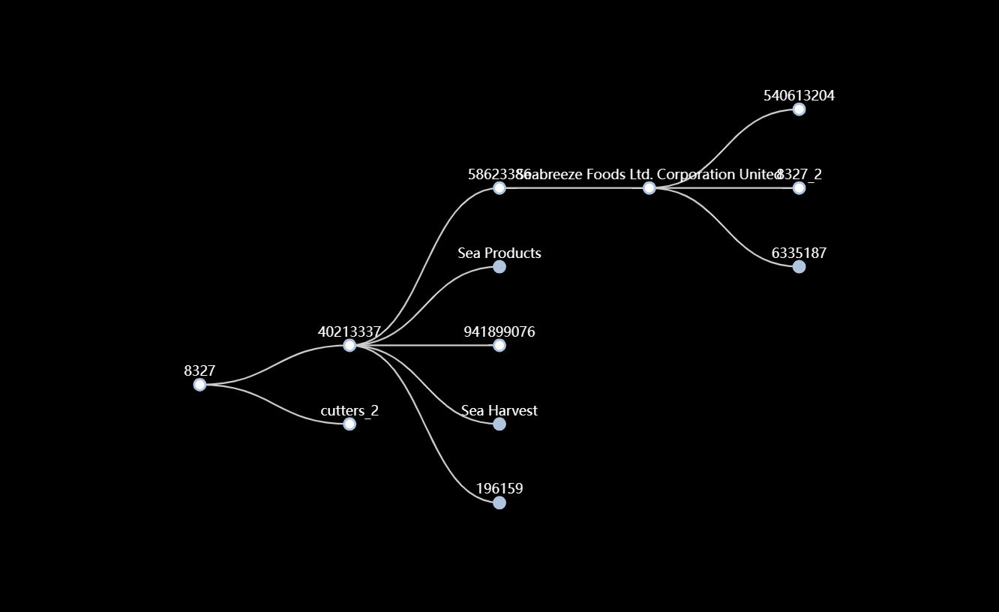

一、研究背景
VAST Challenge 2023 MC1
2023年VAST挑战赛的赛题旨在从知识图谱中识别和组织致力于阻止非法、 未报告和不管制 （IUU） 捕捞，以保护保护海洋物种受其影响。
该挑战包括四个子任务：
1. 调查四个提供的可疑实体，如何将他们与非法捕鱼联系起来？；
2. 识别非法捕鱼的具体模式，提供可能的模式表明非法活动；
3. 除了可疑实体，还应该关注哪些实体？
4. 总结与反馈。
该挑战数据集为大型属性有向多图，包含3000+个实体，7000+个关系。节点数据包含节点id，节点类型以及节点实体所属的国家，其中共有九种类型的实体节点，包括个人、
公司、组织、政治组织、轮船、事件、移动和坐标以及未知类型的节点。边数据包含边关系的源、目标节点以及边的类型和赛题给的默认权重。
非法实体之间的联系较为复杂，且存在违规、虚假信息以达成他们的利益目的，所以我们的任务是调查提供的四个可疑实体，识别和给出非法实体的具体模式，同时根据确定的非法节点与特征属性
为每一个节点预测异常值得分来给出潜在的非法实体。
二、fishcos发现
1.所有权流异常
所有权流指的是节点之间的从属关系，根据ownership确定的上下游层级树。 在金融犯罪中，一种常见的洗钱手段也就是资金转移，资金从上游流向下游最后又回到上游。 同理，在非法捕鱼实体中也存在这种循环的所有权流异常，通过多层所有权流以模糊监督者的关注， 非法实体的所有权流最后又回到自身，这通常意味着非法捕鱼活动的下放和所得利益的回归。 通过ownership可视化所有权流层级树，遍历所有者关系，检查循环所有异常，来发现非法节点。 在左图中，8327节点的所有权流向上游返回，即8327_2在8327的下游出现。说明8327是非法捕鱼实体。 在我们的可视化中为标记根节点的出现次数，在节点id后添加_count，如8327_2意味着这是8327节点在所有权流中第2次出现。
2.邻域异常
邻域异常是指节点的邻居关系存在异常，非法捕鱼实体之间的联系中存在不合理的关系连接， 比如地点和轮船之间的famliy_relationship,组织与person之间的famliy_relationship。 通过邻域异常可视化，检查非法捕鱼实体间的联系，发现非法捕鱼实体间的联系中存在不合理的关系连接。 以此来标记非法捕鱼实体。通过louvain聚类算法可以发现节点实体之间的联系程度，将密切关联的实体进行聚类，同一个聚类、 的实体节点可能具有共谋的可能性，通过检查已经确定的非法实体的邻域信息来确定其他实体的非法可能性。
3.数据异常
数据异常是指通过实体本身特征、图结构特征、邻居节点特征构造的特征向量数据与其他大部分同类型节点 存在较大偏差。比如979893388实体的出边数量与其他大部分节点相差较大，超出了正常的范围。在轮船类型的节点中，出边大部分为ownership关系，而family_relationship关系较少， 是一种不正常的关系连接，通过parellel视图能够比较节点的多维信息数据，从而发现异常节点。
三、fishcos使用指南
1.fishcos简介
fishcos是非法捕鱼活动知识图谱的检测与识别，通过非法捕鱼实体检测与识别模型，实现对非法捕鱼实体直观的可视化与模式识别， 包括基于有向图的交互式可视化设计，使用lovain社区发现算法对节点进行聚类分析，使用余弦相似度与标签扩散以及捕鱼活动参与度、 与政府组织的联系程度对节点进行评分，同时通过层级树图和邻域力导向图展示节点的组织关系，通过平行坐标系视图展示节点的特征信息。
2.overview页面
overview页面是fishcos数据的概览页面，通过overview页面可以查看实体数据的概览信息，包括实体的类型分布、实体的国家分布、 每一个实体所属的组织规模，通过热度词云可视化每一个实体所在组织领域中哪些节点更为重要，通过treemap可视化组织规模。
3.detail页面
detail页面是fishcos的主要部分，在detail页面能够与节点进行交互，探索节点详细的特征信息、邻域信息和组织信息。原数据为一个大型的网络图，我们通过计算和所有权流发现 提供一个按照可疑都进行排名的非法实体列表，代表您可疑优先探索我们提供的可以节点。通过搜索节点能够快速的定位到目标节点的视图。通过筛选邻居节点类型和边关系类型能够对视图进行简化。 我们提供一个视图列表，能够快速的进行视图的切换。对于网络图视图，每一个节点设置一个右键菜单栏，可以对所有节点进行标记为非法或者合法，能够将选中的节点foucos到关注节点， 对每一个邻居节点都能够进行扩展，将邻居节点的邻居添加到当前视图中。